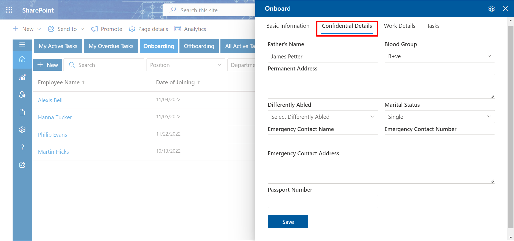
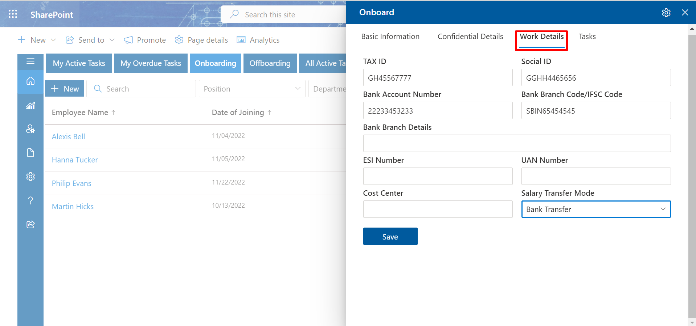
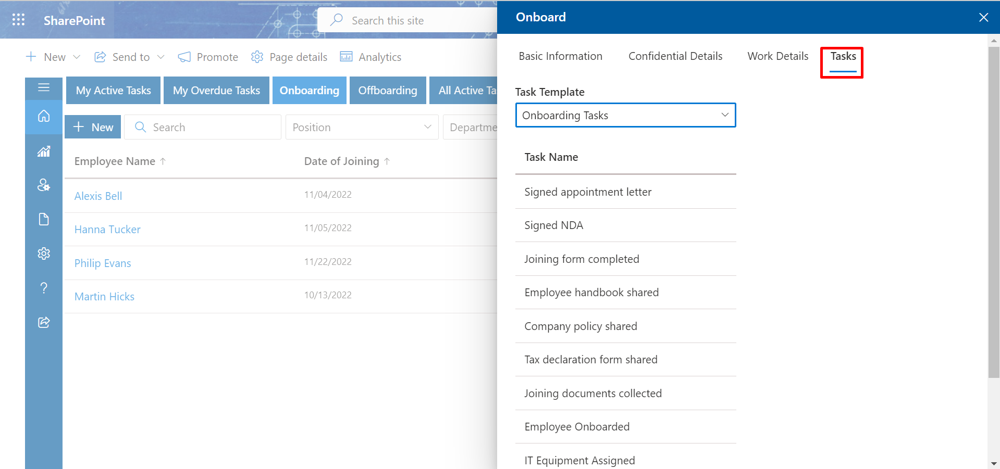
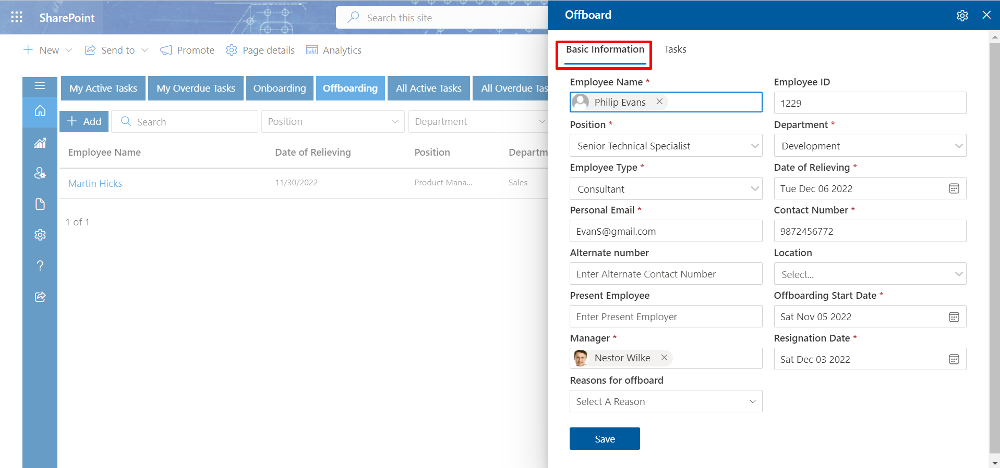
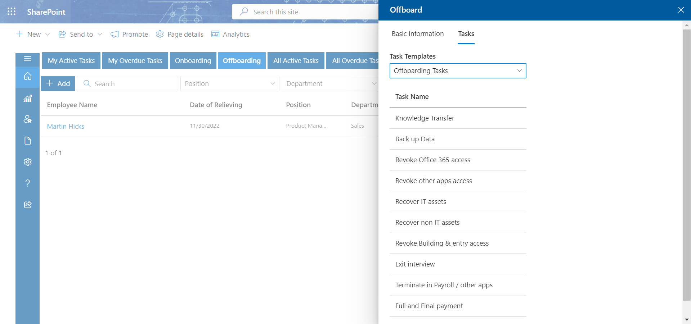
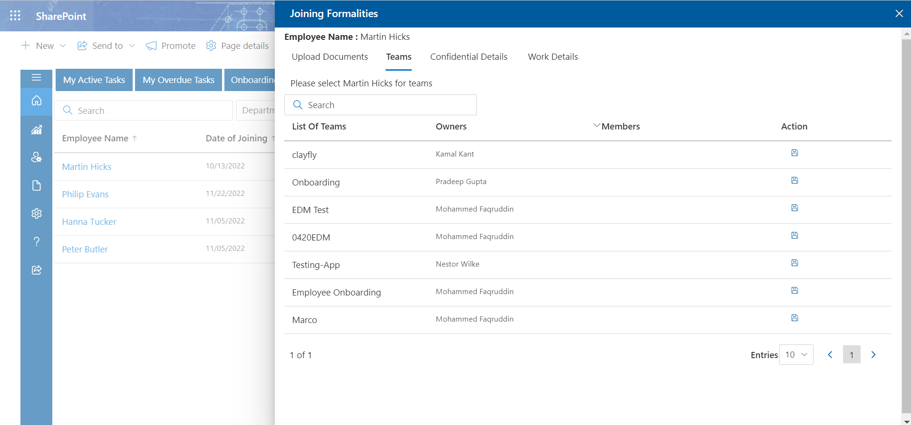

Process
Table of contentMy Active Task
My Overdue Task
Onboarding Process
Offboarding Process
All active Task
All Overdue Task
Onboarded
Offboarded
Training
Preboarding
Onboarding Process
-
In the Onboarding tab, you add new employee details.
Step 1: Adding employee
-
Click on the +New, this displays Onboard page. In Basic information tab, fill
the basic details of the new joining candidate and click Save & Continue button.
New Joinee
For adding new joinee, follow the below steps:
-
In confidential Details tab, fill the confidentail details of the new joining candidate
and click Save & Continue button.
- In Work Details tab, fill the work details of the new joining candidate and click Save & Continue button.
-
In Task tab, select the task template and click Submit button.


 -
In confidential Details tab, fill the confidentail details of the new joining candidate
and click Save & Continue button.
Add
Offboarding Process
-
In the Offboarding tab, you add employee details and task.
-
Click on the +Add, this displays Offboard page. In Basic information tab,
search the employee name from HR365 and click Save & Continue button.

-
In Tasks tab, select the Task Templates and click Submit button.

For adding offboard employee details, follow the below steps:

Onboarded
-
In the onboarded tab, you can see all the onboarded employees. You can upload documents, search
teams, add confidential details and work details.
-
Click on the Onborded tab, that displays Joining Formalities. From here you can see
uploaded documents.
-
Click on Teams tab, from here you can search teams.

-
Click on Work Details, fill the field and click on Save button.

Offboarded
-
In the onboarded tab, you can see all the onboarded employees. You can upload documents, search
teams, add confidential details and work details.
Training
-
In the Training tab, first click the new. Fill out the appropriate fields on the Training Invitation
panel that will appear before selecting Schedule. There will be a message sent with information about
upcoming training sessions to participants and instructors (s).
Pre-Onboarding
-
Preboarding is the period of time between an employee accepting their job offer and their first day.
Essentially, it’s a subsection of the overarching onboarding process.
First click on New a panel Preboarding will open. Here fill the required fields and click on Submit button.
A mail will be send to HR Head, Admin, HR Executive. HR Head can approve and reject the Approval Request.To approve the request, click the link provided in the email.
A mail will be sent to the hiring manager after the HR Head has approved the request.The recruiting procedure can be started by the hiring manager by following the link provided below in the email.
The hiring manager will complete these fields and submit the information.
Click on the setting icon. Selecting the checkbox will make the column visible in the form. Enable this toggle will make a mandatory field inside the form.
An email with information on the resources and services needed for the pre-onboarding process will be delivered to the IT Team. Click on the link given in the mail.
Now complete the IT Taks template with the necessary data, then click the submit button.The editing preboarding panel of the hiring manager will display these specifics.
The Pre-Onboarding Info will be filled out by the recruiting manager. Additionally, you may assign the work using the Task Templateand click on the submit button.
The edit pre-boarding panel of the IT Team will display the tasks allocated to that team.

The tab labelled "All Task" will display all of the tasks.